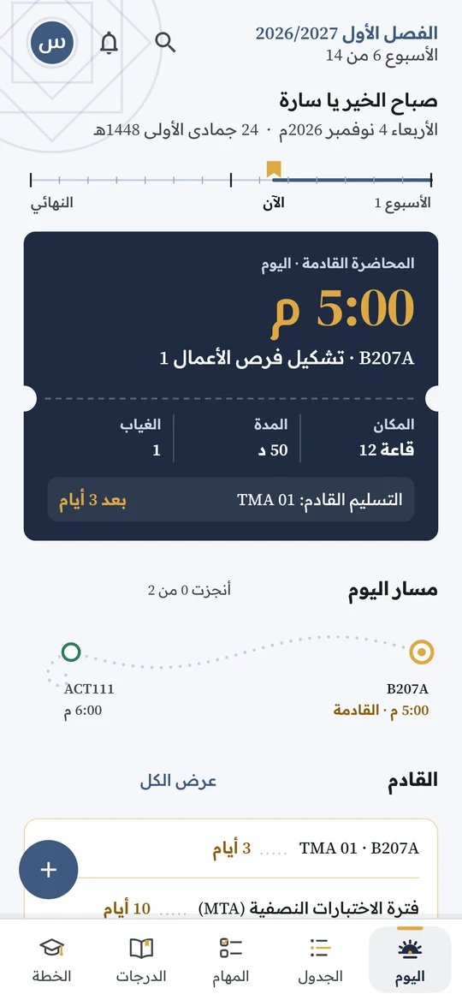
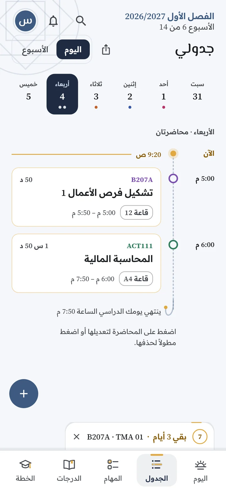
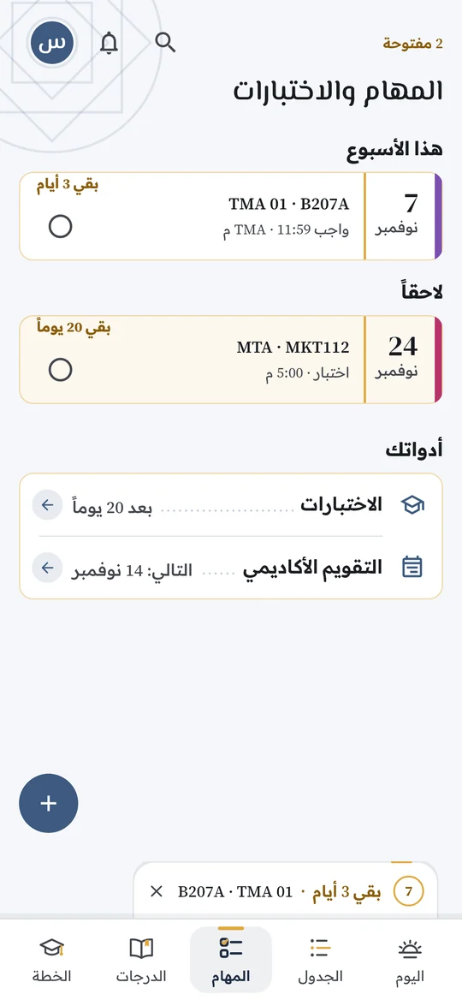
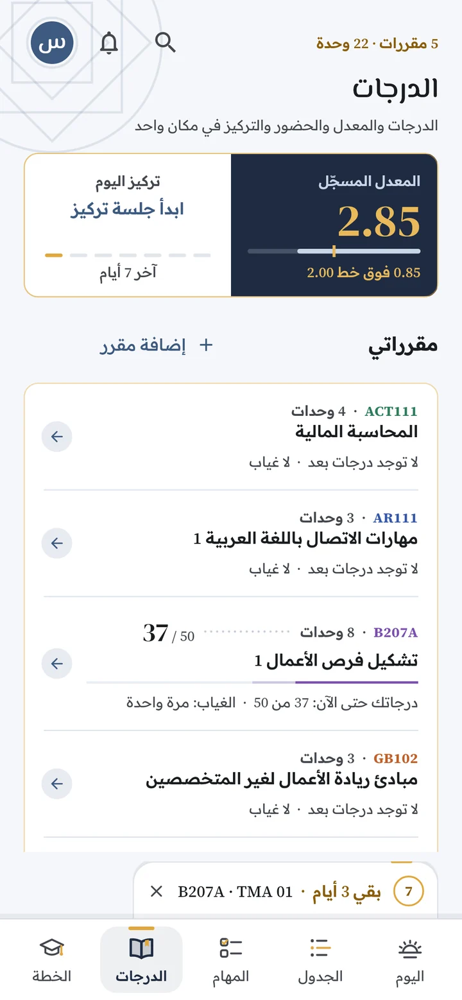
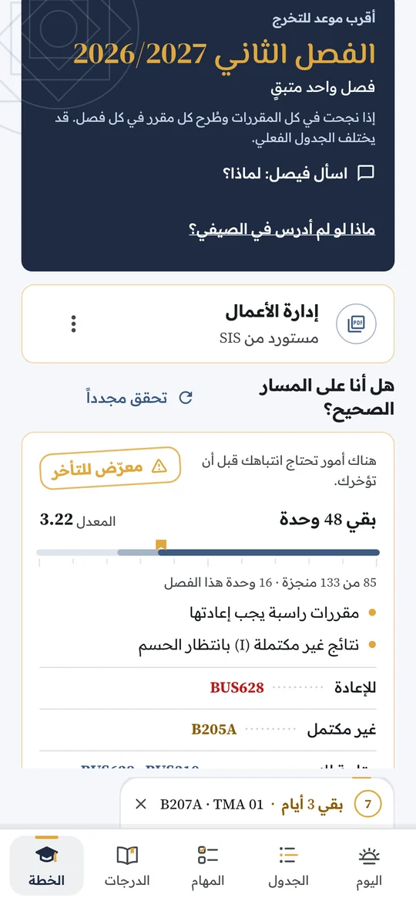

01 / 05
محاضرتك القادمة أولًا.
افتح التطبيق، وأول ما تراه موعد محاضرتك القادمة ومكانها ومدتها، وغيابك، وما عليك تسليمه. وفي المساء يعرض لك الغد.
مسار اليومأُنجز 0 من 2
- B207A · 5:00 م
- ACT111 · 6:00 م
مخطط جامعي · أندرويد
يجمع فصلي حياتك الجامعية في مكان واحد: جدولك، والواجبات (TMA) والاختبارات، ودرجاتك ومعدلك، وخطة فصلًا بفصل حتى التخرج.
لطلاب الجامعات في الكويت والسعودية والأردن وعُمان والبحرين ولبنان ومصر.

01 · التطبيق
01 / 05
افتح التطبيق، وأول ما تراه موعد محاضرتك القادمة ومكانها ومدتها، وغيابك، وما عليك تسليمه. وفي المساء يعرض لك الغد.
02 / 05
القاعات، حضوري أو عن بُعد، محاضرات كل أسبوع أو في الأسابيع الفردية أو الزوجية، ومحاضرات تعويضية، وجدول رمضان تضبطه مرة واحدة.
03 / 05
الواجبات والاختبارات القصيرة والاختبارات حسب الأسبوع، مع الأيام المتبقية، وتنبيه مبكر للأسابيع المزدحمة، والتقويم الأكاديمي الرسمي.
04 / 05
أدخل درجات TMA وMTA، واعرف الدرجة التي تحتاجها في النهائي لكل تقدير، مع تنبيه قبل آخر يوم للسحب.
05 / 05
تفتح شاشة الخطة على الفصل الذي يمكنك التخرج فيه، ثم ما تسجّله بعده.




02 · خطة التخرج
يبني فصلي طريقك إلى التخرج فصلًا بفصل، مع مراعاة المتطلبات السابقة وحدود الوحدات في كل خطوة.
ملف سجلك (PDF) من نظام الجامعة، أو أدخل مقرراتك يدويًا. وتراجع كل سطر قبل الحفظ.
الوحدات المنجزة والمتبقية، والمقررات التي تحتاج إعادة، والنتائج المعلّقة، ومعدلك.
الأسرع أو المتوازن أو الأخف. احفظ حتى 3 خطط وقارن بينها.
اضغط «اسأل فيصل: لماذا؟» لشرح قصير وبسيط لخطتك.
الفصل الذي يمكنك التخرج فيه، أول ما تراه في شاشة الخطة.
الخطة تقدير، فتأكد دائمًا مع جامعتك ومرشدك الأكاديمي.
03 · وفي التطبيق أيضًا
04 · بياناتك
يعمل فصلي دون تسجيل دخول. سجّل بحساب Google فقط إن أردت النسخ الاحتياطي والمزامنة.
تُقرأ ملفات سجلك (PDF) عادةً على هاتفك، ولا يُرسل للتخطيط إلا المقررات والدرجات. وإن تعذّرت قراءة ملف على الهاتف، يُرسل إلى خادمنا ويُحذف فور قراءته.
لا يطلب فصلي كلمة سر حسابك الجامعي أبدًا.
احذف بياناتك أو حسابك من الإعدادات في أي وقت.
ندعو الطلاب لتجربة فصلي قبل نشره للجميع. التجربة مجانية وتطوعية.
أو اكتب إلى support@fasli.app مع بريد Gmail الخاص بك.